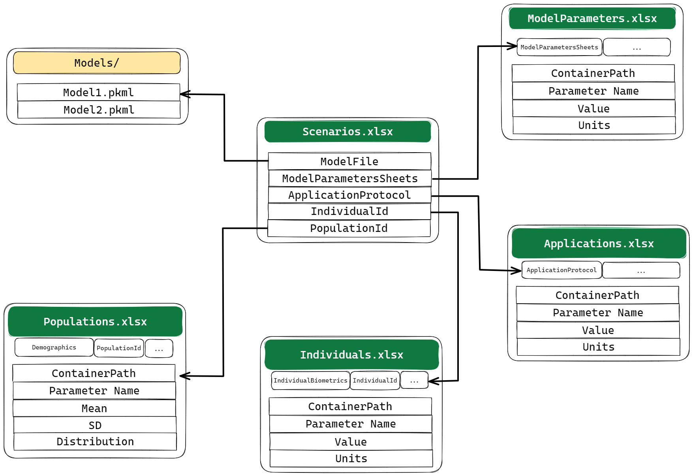
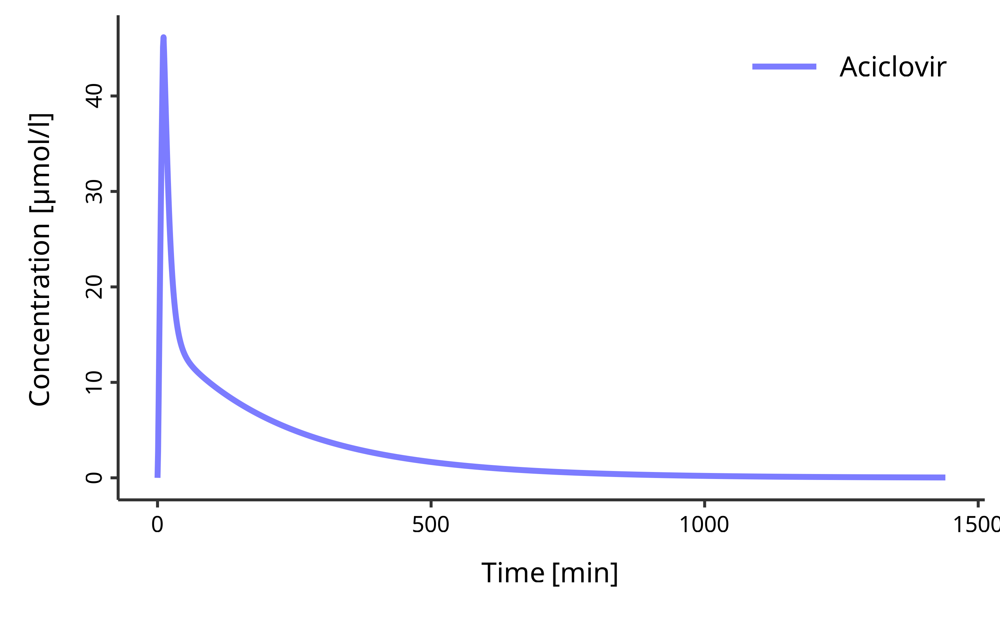
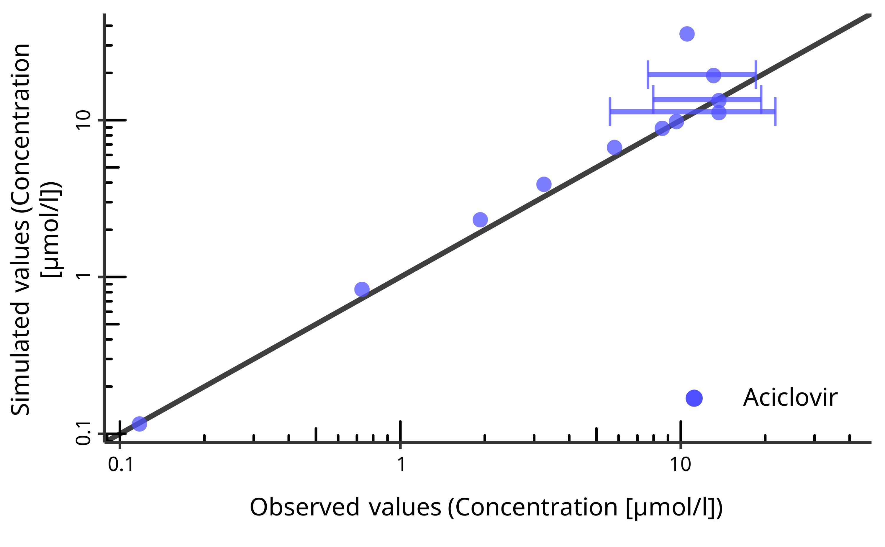

Introduction
esqlabsR is designed to make life easier for OSPS users. The workflows implemented in this package rely on simple concepts:
- a predefined project folder structure,
- Excel files for definition of simulation scenarios out outputs.
Initialize Project
esqlabsR facilitates modeling and simulation workflows with OSPS relying on a well defined project structure based on Excel files. These files are organized in different folders and their structure must not be altered.
A new project folder can be initialized with the
initProject() function.
It will create the expected simulation project’s folder structure,
which is described in details in
vignette("project-structure").
Each one of these folders contains a series of .xlsx
files with specific purpose. They are all linked to the project through
the ProjectConfiguration.xlsx file located in the root of
the project folder.
This file defines where all the necessary files are stored
in the project folder. This file is already preconfigured and should not
be changed in most cases. However, if target files would come to change
location, ProjectConfiguration.xlsx should reflect that.
All the path specified in the Value column should be
relative to the ProjectConfiguration.xlsx
location.
Loading the project configuration is the first step in any workflow using esqlabsR.
my_project_configuration <- createProjectConfiguration(path = "path/to/ProjectConfiguration.xlsx")ProjectConfiguration:
...
Model folder: Models/Simulations
Configurations folder: Configurations
Model Parameters: Configurations/ModelParameters.xlsx
Individuals: Configurations/Individuals.xlsx
Populations: Configurations/Populations.xlsx
Populations Folder: Configurations/PopulationsCSV
Scenarios: Configurations/Scenarios.xlsx
...Note that the ProjectConfiguration stores paths to other
files that are used in the project.
To create an example ProjectConfiguration and execute
the rest of this tutorial, run the following:
my_project_configuration <- createProjectConfiguration(path = exampleProjectConfigurationPath())Version Control and Project Sharing
esqlabsR provides powerful version control capabilities
through project configuration snapshots. This allows you to:
- Track changes to your project configuration in version control systems like Git
-
Share projects with team members easily
- Create backups before making significant changes
- Ensure reproducibility across different environments
# Create a JSON snapshot of your project configuration
snapshotProjectConfiguration(my_project_configuration)
# Share the JSON file with team members or commit to version control
# Later, restore the project configuration from the snapshot
restored_config <- restoreProjectConfiguration("ProjectConfiguration.json")For comprehensive information about version control features,
workflows, and best practices, see the “Version Control and Project
Sharing” section in vignette("project-structure").
Design Scenarios
Now that the project’s file structure is ready, the next step is to run simulations. In esqlabsR, simulation are run by defining and executing multiple scenarios.
To modify, add or delete a scenario, edit the
Parameters/Scenarios.xslx file. Each row of this file
defines a simulation scenario.
The main properties that can be defined for a scenario are:
-
ModelFileis the name of the.pkmlfile that can be found in theModels/directory. -
ModelParameterSheetsare the names of the sheets inParameters/ModelParameters.xlsxthat contain the parameters to apply to the model, -
ApplicationProtocolis the name of the sheet inParameters/ApplicationParameters.xlsxthat specify the simulated administration protocol, -
SimulationTimeandSimulationTimeUnitdefine the time range to simulate, it should be three numbers for{start, end, resolution} -
Individuald: the id of the individual to simulate. The id and settings for individuals are defined inParameters/Individuals.xlsx, -
PopulationId: the id of the population to simulate. The id and settings for populations are defined inParameters/PopulationParameters.xlsx.
Note that multiple aspects of a simulation scenario are defined in
other excel files, and the Scenarios.xslx file links to the
specific sheets or other information stored in those files.

For example, if we want to change the characteristic of the
individual used in the simulation, we must add a new row with a
different IndividualId in the
IndividualBiometrics sheet of
theIndividuals.xlsx file and/or specify a parameter sheet
with this IndividualId in the same file.
For more information on all the scenario parameters that can be
setup, read vignette("design-scenarios").
Run Scenarios
Once all the scenario properties are set up in the excel files, we
can import ScenarioConfiguration using
readScenarioConfigurationFromExcel() and create
Scenario objects with createScenarios():
my_scenarios <- createScenarios(
readScenarioConfigurationFromExcel(
scenarioNames = "TestScenario",
projectConfiguration = my_project_configuration
)
)Then, we run the simulations by passing the scenarios we defined:
myScenarioResults <- runScenarios(my_scenarios)Simulation results can be saved for later use:
saveScenarioResults() and
loadScenarioResults().
saveScenarioResults(myScenarioResults,
projectConfiguration = my_project_configuration,
outputFolder = my_project_configuration$outputFolder
)
myScenarioResults <- loadScenarioResults(
scenarioNames = "TestScenario",
resultsFolder = my_project_configuration$outputFolder
)Learn more on how to run simulations in
vignette("run-simulations").
Plot Results
The simulation results can now be plotted. For this, the package
relies on on the concept of combining multiple simulation results and
observed data using the DataCombined class and creating
figures using functions implemented in the ospsuite
package.
First, a DataCombined object is initialized:
my_datacombined <- DataCombined$new()Then, simulation result are added to the dataCombined object:
my_datacombined$addSimulationResults(myScenarioResults$TestScenario$results,
names = "Simulated",
groups = "Aciclovir"
)Finally, the plot is generated:
plotIndividualTimeProfile(my_datacombined)
In some cases, we also want to plot the observed experimental data
(stored in Data/). DataCombined also has the
ability to store observed data for them to be plotted.
observed_data <- loadObservedData(
projectConfiguration = my_project_configuration,
sheets = "Laskin 1982.Group A"
)
my_datacombined$addDataSets(observed_data, names = "Observed", groups = "Aciclovir")
plotObservedVsSimulated(my_datacombined)
Many other plot types are available in esqlabsR, read
vignette("plot-results") to learn more.